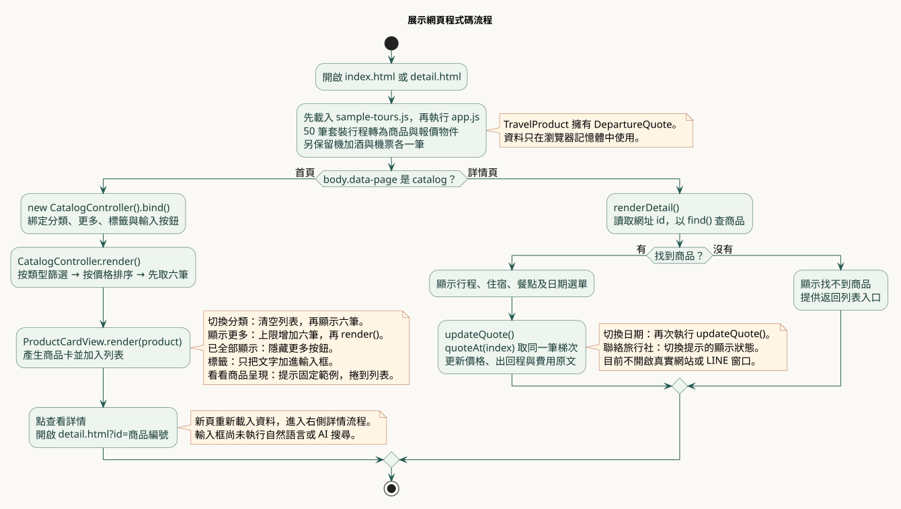

程式碼流程圖
目前的前端展示版：載入範例 → 顯示商品 → 查看詳情 → 切換日期報價。

sample-tours.js
50 筆套裝行程純資料，每筆包含三個梯次。
TravelProduct / Departure / PriceQuote
商品擁有梯次，梯次擁有報價；日期與價格一起取得。
CatalogController
處理分類、低價排序與每批六筆的顯示上限。
ProductCardView.render()
把商品物件轉成卡片 HTML，放進畫面。
ProductDetailController / ProductDetailView
控制器查商品與梯次，介面顯示詳情；日期改變時一起更新價格與回程。
輸入框與聯絡入口
輸入只留在此頁，聯絡只顯示提示；外部 AI、後端與真實窗口尚未串接。
所有資料目前都在瀏覽器記憶體中運作。可編輯 UML 原稿 · 對照 app.js · 類別圖與程式 · MVC 循序圖